하가 다바르는 성경 본문과 구절 해설, 묵상플랜, 연결된 구절과 원어, 도서·설교집을 한 자리에서 읽는 개신교 성경 묵상 앱입니다. 폰에서도 PC에서도 같은 말씀을 이어서 읽습니다.
앱 받기주의 말씀은 내 발에 등이요 내 길에 빛이니이다시편 119:105
הָגָה · דָּבָר
하가는 히브리어로 「소리 내어 되뇌다, 나직이 읊조리다」라는 뜻입니다. 시편 1편의 「그 율법을 주야로 묵상하는도다」에서 「묵상하다」가 바로 이 낱말입니다. 같은 낱말이 사자가 먹이를 움키고 낮게 으르렁거리는 소리(사 31:4)와 비둘기가 구구 우는 소리(사 38:14)에도 쓰였습니다.
성경이 말하는 묵상은 머릿속 생각에 그치지 않습니다. 말씀을 입에 올려 거듭 되뇌며 마음에 새기는 일입니다.
다바르는 「말씀」입니다. 하나님께서 하신 말이면서 그 말씀이 이루는 일까지 함께 뜻하는 낱말입니다.
그래서 하가 다바르는 「말씀을 되뇌다」입니다. 바쁜 하루 중에도 말씀 한 구절을 입에 올리고, 시간이 날 때는 그 말씀을 깊이 파고들 수 있도록 이 앱을 만들었습니다.
두 앱은 따로 놀지 않습니다. 이동 중에 폰으로 시작한 묵상을 집에서 PC로 깊이 이어 갑니다.
출근길과 쉬는 시간에 오늘의 말씀과 묵상플랜 한 몫을 읽고, 떠오른 생각을 짧은 묵상노트로 남깁니다. 설교·기도·찬양 영상도 멈춘 곳에서 다시 이어 듣습니다.
넓은 화면에서 구절 연결과 말씀의 흐름, 주석과 원어, 고전 도서를 나란히 펼쳐 놓고 폰에서 남긴 노트를 다듬어 연구노트로 키웁니다.
폰에서 쓴 노트와 즐겨찾기, 플랜 진행이 PC로 오고 PC에서 정리한 자료가 폰으로 갑니다. 집의 와이파이 안에서 두 기기가 직접 주고받을 뿐 인터넷 서버에 올리지 않습니다.
구절을 누르면 해설과 묵상질문, 묵상기도가 열립니다. 장과 단락의 흐름도 같은 자리에서 봅니다.
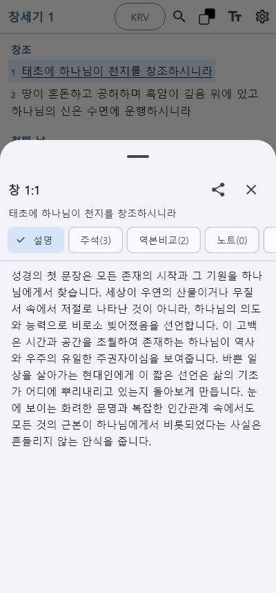
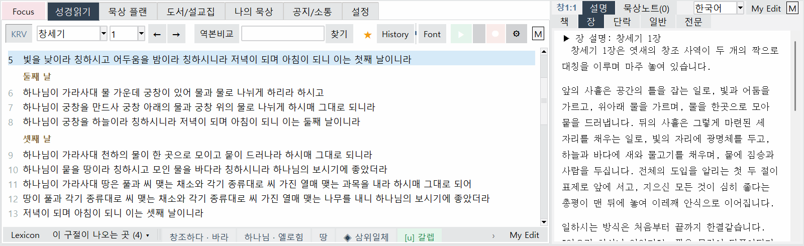
한 구절이 성경 전체의 어느 구절과 이어지는지, 왜 이어지는지를 설명과 함께 보여 줍니다. 말씀의 흐름을 따라 창세기에서 요한계시록까지 걸어 봅니다.
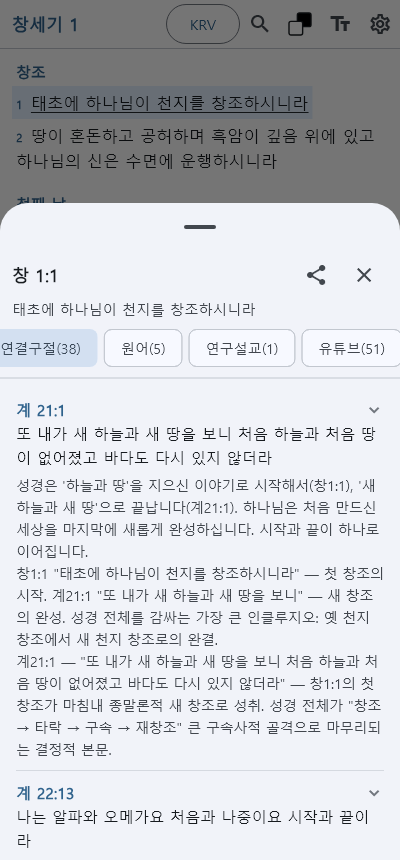
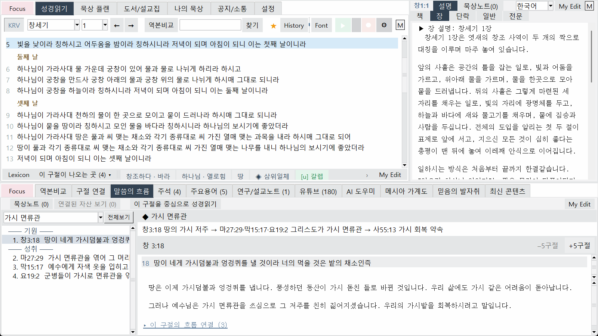
여러 고전 주석을 오늘의 말로 옮겨 읽고, 히브리어·헬라어 낱말이 성경 어디에 다시 나오는지 찾아갑니다.
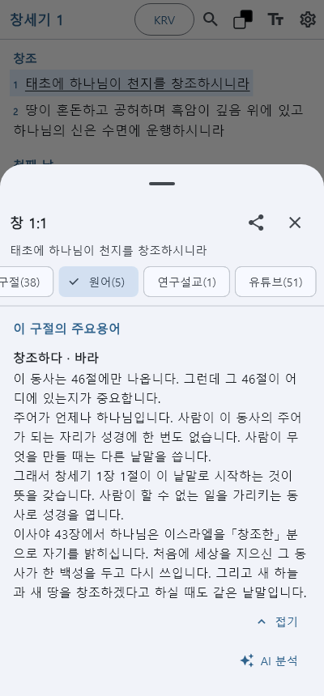
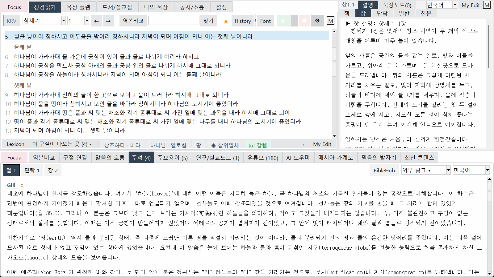
통독부터 주제 묵상까지 하루 몫을 정해 주고, 한 주제를 여러 각도에서 비추어 읽게 합니다.
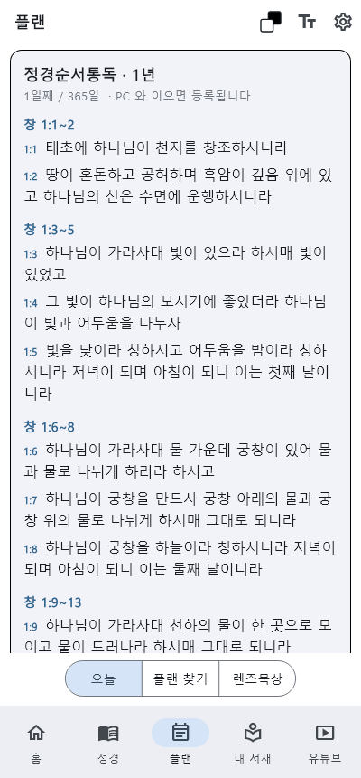
스펄전, 머레이, 바운즈 같은 신앙 고전을 오늘의 말로 옮겨 읽습니다.
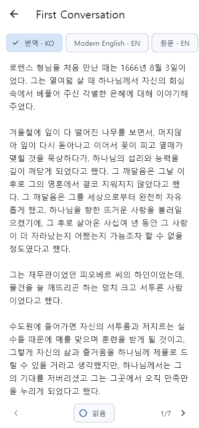
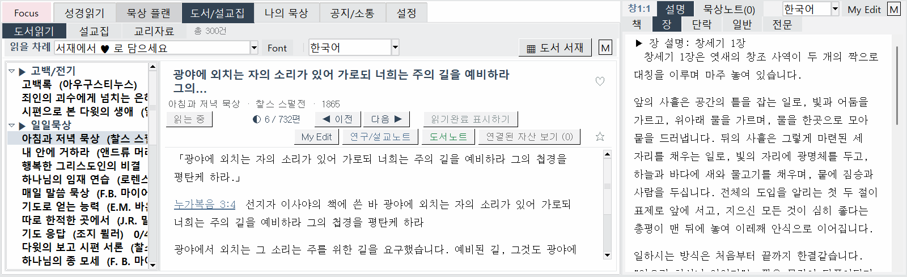
구절과 이어진 설교와 기도, 찬양을 언어별로 선택해 듣고 멈춘 곳에서 다시 이어 듣습니다.
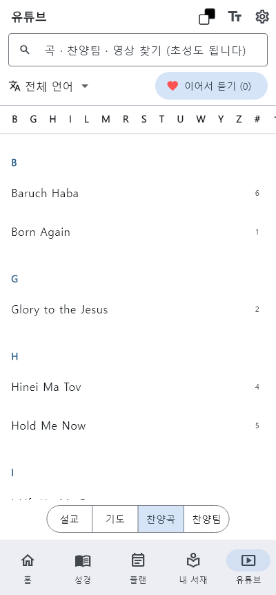
내가 선택한 AI 에게 구절을 묻고, 여러 답을 한 글로 정리해 내 연구노트로 남깁니다.
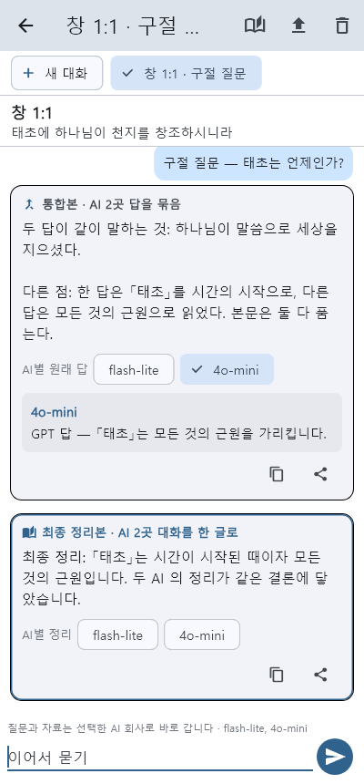
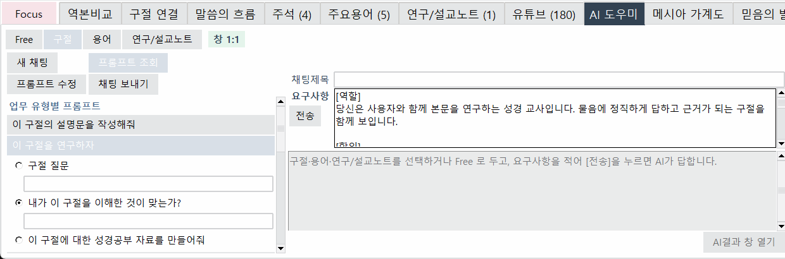
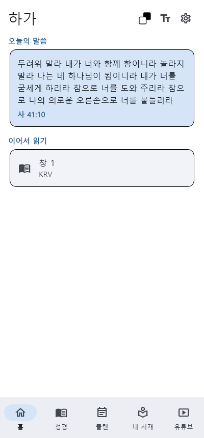
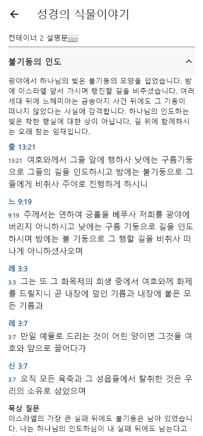
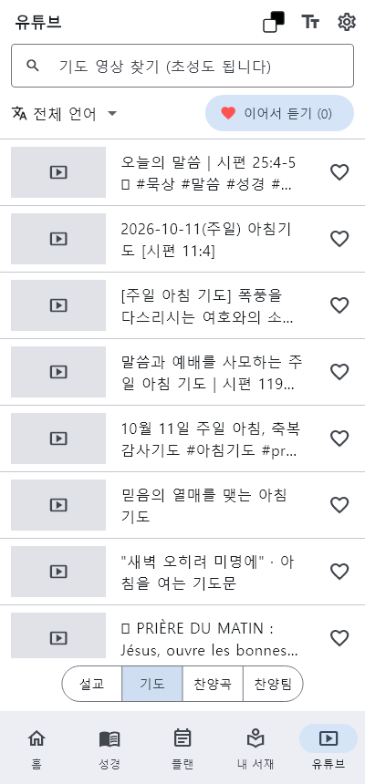
AI 도우미는 내가 넣은 AI 회사의 키로 그 회사에 바로 묻습니다. 키는 폰에만 저장되고 우리 서버로 가지 않습니다. 구글 Gemini 무료 키를 받아 넣는 차례입니다.
구글 계정이 있으면 그대로 로그인합니다. 없으면 먼저 하나 만듭니다.
브라우저에 https://aistudio.google.com/api-keys를 입력합니다.
[Create API key](API 키 만들기)를 누르면 긴 글자 한 줄이 나옵니다.
그것이 키입니다. 복사해 두세요.
다른 사람들에게 노출하지 마세요.
발급받은 API 키를 앱에 저장하세요.
(Gemini API Key 예시)
방법 1 : AI Studio 에서 키 복사 → 앱 설정 화면(상단에 배치된 톱니바퀴 모양 아이콘) → [+ 계정] → AI 회사 선택 (예: Gemini) → 키 붙여 넣기 → [저장]
방법 2 : 앱에 표시된 AI 단추를 누르면 위와 같은 경로를 따라서 안내가 표시됩니다.
다른 사람에게 보여주거나 보내지 마세요. 만일, 외부에 새어 나갔다면, AI Studio 에서 기존의 키를 지우고 새로 발급 받으면 됩니다.
키는 사용자의 폰에만 저장됩니다. 앱은 사용자의 키를 전혀 수집하지 않으며, 앱 서버 또는 다른 일체의 외부에 보내지 않습니다.
AI 대화 질문은 사용자가 키를 입력한 AI 회사에게 곧바로 전송됩니다.
무료 API 키는 AI 회사의 정책에 따라 하루 사용량이 정해져 있습니다.
일반적으로 AI 회사의 정책과 이용약관에 따라 사용자가 무료 키를 이용하여 보낸 글은 AI 회사의 서비스 개선에 사용될 수 있습니다.
구글은 만 18세 이상에게 키를 줍니다.
무료키를 제공하는지 여부는 AI회사의 정책에 따라 다릅니다.
결제를 연결하지 않은 Gemini 무료 키는 하루 한도를 넘으면 멈출 뿐 요금이 나가지 않습니다. 유료 키를 쓴다면 그 회사 화면에서 월 지출 한도나 알림을 꼭 정하세요(구글 클라우드 예산은 알림만 보내고 멈추지 않습니다). 앱도 키마다 하루 호출 수를 세어 평소보다 많으면 계속할지 묻습니다.
출시되면 이 자리에서 받으실 수 있습니다.
앱 사용 중 궁금한 점이나 수정할 점을 보내 주세요. 답장은 적어 주신 메일로 드립니다.